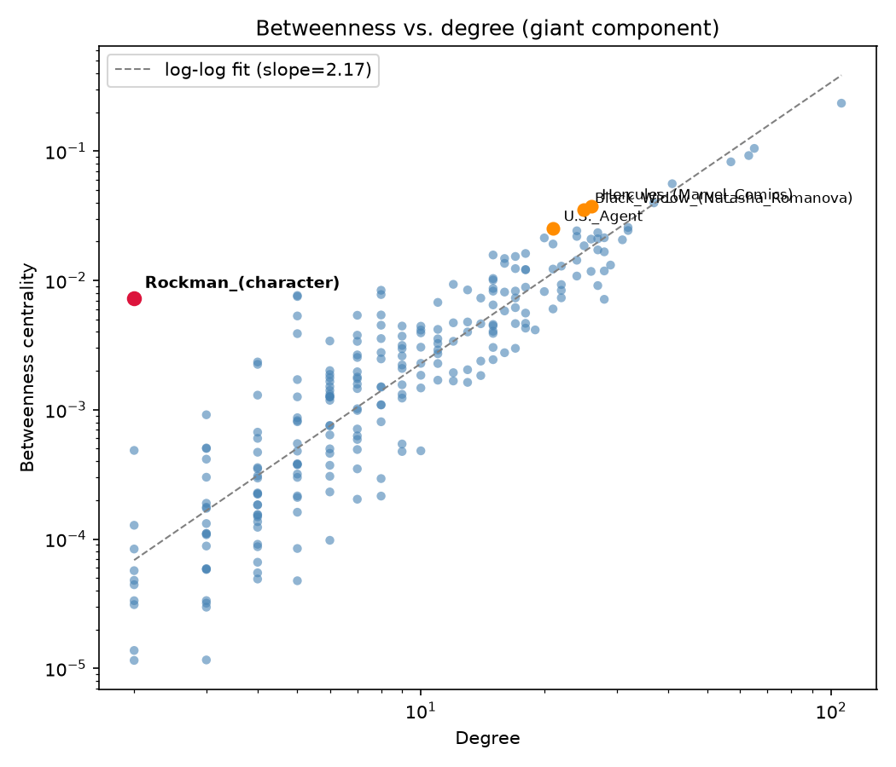
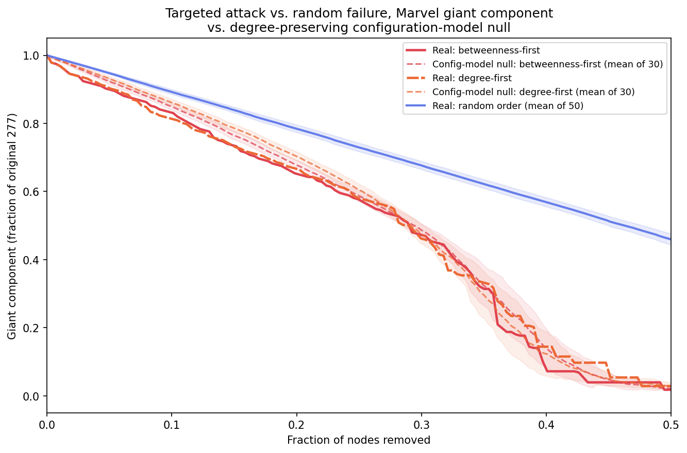
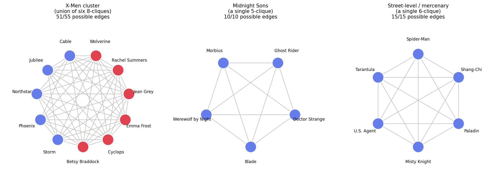

The Rockman Surprise
A log-log scatter of betweenness centrality against degree, fit with a trend line, surfaces which nodes over- or under-perform what their own degree would predict.
“Who is the most surprising character in the network by any centrality, against the right null? Make the case, with a figure, and tell us what they bridge.”
Rockman_(character). Degree 2 — connected only to Black_Widow_(Natasha_Romanova) and The_Witness_(character) — yet the single largest positive residual in the entire betweenness-vs-degree scatter below: +2.02, far above what any other degree-2 node reaches.

The reason: The_Witness_(character) is a degree-1 dead end, and Rockman is its only link to the rest of the network. Every shortest path from The_Witness_(character) to anyone else has to pass through him — so low degree doesn't mean low importance, if you happen to be someone's sole bridge to everywhere else.
Beyond Spider-Man: bridges the degree top-10 misses
| character | role |
|---|---|
| Hercules_(Marvel_Comics) | bridges cosmic/Avengers-adjacent characters (Ares, Star-Lord, Rocket Raccoon) to street-level heroes |
| Black_Widow_(Natasha_Romanova) | bridges the spy/espionage cluster (Hawkeye, Mockingbird, Yelena Belova) to the mainstream hero core; shares only 4 neighbors with Hercules despite similar degree |
| U.S._Agent | connects a cluster of lower-degree military/team-support characters (Battlestar, Guardsman, Thin Man, Paladin, Blazing Skull, Union Jack) directly into the network's biggest hubs (Spider-Man, Wolverine, Scarlet Witch, Hank Pym, Moon Knight) |
Try It on the Real Network
The full 277-node giant component renders as an unreadable hairball, so pick a smaller, self-contained neighborhood to browse instead — computed on the fly with the same breadth-first search from earlier, just bounded to a fixed number of hops from one (or several) characters. Click any node to remove it: node size is degree (how many connections, right now — it shrinks live as you cut a node's neighbors), and node color is betweenness centrality on a sequential scale from pale lilac to deep purple — a from-scratch Brandes' algorithm running in your browser, recomputed and cached once per click rather than continuously. Faded, translucent nodes have been stranded outside the current biggest cluster.
Each view below combines two or three bridge characters' neighborhoods into one: a single character's 1-hop neighborhood alone is basically a star, where every shortest path already runs through the center and betweenness has nowhere to redistribute onto as you remove nodes. These combined views avoid that — each pair's neighborhoods overlap only at a couple of shared hub characters, so removing one bridge forces its leftover neighbors to route through whatever connection is left. Watch for a small, pale node that suddenly darkens once its neighborhood's other exit disappears.
Try it: the Rockman effect, isolated
A small synthetic graph: a dense 5-node hub clique, one bridge node with degree exactly 2, and a variable number of leaves hanging off the bridge. Betweenness recomputed live (Brandes' algorithm) as you drag the slider.
Who Actually Holds the Network Together?
Betweenness predicts who carries a lot of shortest-path traffic. It doesn't automatically predict who's irreplaceable — those are different questions, and the giant-component explorer above already hinted at the gap. Two ways to test it directly: knock out one character at a time and measure the actual damage, then remove characters in bulk, by different strategies, and watch how fast the network comes apart.
One character at a time: does betweenness predict the damage?
For every one of the 277 characters in the giant component: remove just that one character, alone, and measure how many other characters get stranded outside the resulting largest fragment.
| Character | Stranded | Betweenness rank |
|---|---|---|
| Spider-Man | 5 | #1 |
| Black Widow (Natasha Romanova) | 3 | #8 |
| Doctor Strange | 2 | #4 |
| Deadpool | 1 | #5 |
| Deathlok | 1 | #16 |
| Genis-Vell | 1 | #53 |
| Guardsman (character) | 1 | #47 |
| Moon Knight | 1 | #13 |
| Highest betweenness | Spider-Man |
| Highest actual damage | Spider-Man |
| Same node? | yes |
| Spearman correlation (damage vs. betweenness, all 277) | 0.31 |
| Hercules's damage (betweenness rank #7) | 0 |
In bulk: targeted attack vs. random failure — compared to what?
Now remove characters in batches, three strategies on the real network: highest betweenness first, highest degree first, or uniformly at random (50 random orders, averaged). Then the "compared to what" question this site keeps asking: is the real network's vulnerability to targeted attack just what its heavy-tailed degree sequence guarantees, or is the real wiring itself more fragile than that? 30 degree-preserving configuration-model replicates, same two targeted strategies recomputed on each, averaged.

| Removed | Real | Null (mean of 30) |
|---|---|---|
| 5% (13 nodes) | 90.3% | 92.7% |
| 10% (27 nodes) | 83.4% | 85.3% |
| 20% (55 nodes) | 65.3% | 68.0% |
| 30% (83 nodes) | 47.3% | 48.7% |
| Removed | Real | Null (mean of 30) |
|---|---|---|
| 5% (13 nodes) | 91.0% | 93.6% |
| 10% (27 nodes) | 81.6% | 86.5% |
| 20% (55 nodes) | 66.8% | 70.5% |
| 30% (83 nodes) | 46.2% | 47.6% |
Do the Biggest Cliques Turn Out to Be Teams?
A clique here is a set of characters whose articles all link to each
other, pairwise — the tightest possible structure a network can have.
Finding the biggest ones on the giant component (893 maximal cliques in total,
nx.find_cliques) and naming their members is the direct way to ask
whether "team" is a real structural feature of this network, or just a label we'd
like to project onto it.
The largest cliques: yes, they're a team
The largest maximal cliques top out at size 8 — six distinct 8-cliques, all drawn from the same 11-character pool, all unmistakably X-Men:
| Character | Wikipedia category |
|---|---|
| Cyclops (Marvel Comics) | X-Men members |
| Wolverine (character) | X-Men members |
| Storm (Marvel Comics) | X-Men members |
| Jean Grey | X-Men members |
| Rachel Summers | X-Men members |
| Betsy Braddock | X-Men members |
| Character | Wikipedia category |
|---|---|
| Emma Frost | X-Men supporting characters |
| Cable (character) | New Mutants / X-Force |
| Jubilee (character) | X-Men members |
| Northstar (character) | X-Men members |
| Phoenix (Guardians of the Galaxy) | X-Men-adjacent (Phoenix Force) |
Drop one level to size-6 cliques (25 of them) and other real teams show up too — not X-Men this time:
| Character |
|---|
| Blade (character) |
| Doctor Strange |
| Ghost Rider (Johnny Blaze) |
| Morbius |
| Werewolf by Night |
| Character |
|---|
| Misty Knight |
| Paladin (comics) |
| Shang-Chi |
| Spider-Man |
| Tarantula (Marvel Comics) |
| U.S. Agent |

The X-Men panel is the more informative one precisely because it isn't a single clique but the union of six overlapping ones: 51 of 55 possible edges are real, and all four missing pairs (Cable–Storm, and Jubilee/Northstar/Phoenix with each other) involve only the "swappable" characters — never the six-member core. The clique algorithm is finding the same structure the table already suggested: one dense, stable inner group, with a rotating cast around its edges.
Midnight Sons
category — that cluster is a real, named team, not a coincidence.
The street-level cluster doesn't share one clean Wikipedia team category
(Misty Knight and Paladin have none at all), but it's the same
mercenary/support-hero neighborhood U.S. Agent
was already shown bridging into the hub core, earlier on this page —
found again independently, this time by clique instead of betweenness.
Every large clique in this network names a real cluster; none of them are
structurally arbitrary.
Homophily: does sharing a team predict a link, more than chance?
Two attributes, both scraped fresh from Wikipedia's category system for every character in the giant component: team (X-Men / Guardians of the Galaxy / Fantastic Four — whichever category matched first) and first-appearance decade. Both tested the same correct way: shuffle the attribute labels across the fixed real network (200 times), not the edges — the question is whether this labeling of this real network is unusual, not whether the wiring itself is (that's a different null, used elsewhere on this site for degree and clustering).
| real assortativity r | 0.571 |
| label-shuffle null (mean ± std) | −0.050 ± 0.057 |
| z-score | 10.8 |
| edges within the same team | 86.0% |
| real assortativity r | 0.156 |
| label-shuffle null (mean ± std) | −0.011 ± 0.028 |
| z-score | 6.0 |
A Random Walk Is PageRank
PageRank's own definition is a random surfer: at every step, with probability
α follow a uniformly random outgoing link, and with probability
1−α teleport to a uniformly random character anywhere in the network
(a dead end with no outgoing links always teleports). Walk that surfer for long
enough on the real directed network below, and the fraction of time it spends at
each character should converge onto real PageRank — precomputed with
networkx.pagerank in the week-3 notebook, validated there against a
hand-written implementation to six decimal places. Watch the correlation climb as
you add steps — or click any of the current character's outgoing links
directly to steer the walk yourself; a manual click counts as a step too, folded
into the same tally as the automatic ones.